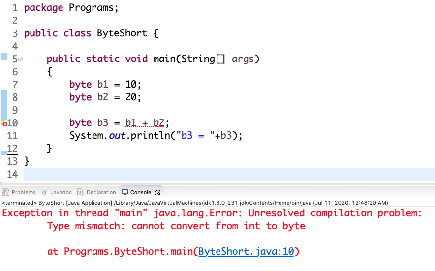

We know that,
"When byte and short values are used in an expression, they are automatically promoted to int when the expression is evaluated."
Look at the example below:-

In the above program the RHS expression b1 + b2 has return type int since b1 and b2 are first automatically promoted to int and then the expression gets evaluated resulting in the expression having return type int.
To solve the above problem, we have two options:-
1. Change the data type of b3 to int like int b3 = b1 + b2;
2. Cast the entire RHS expression into byte like byte b3 = (byte)(b1 + b2);